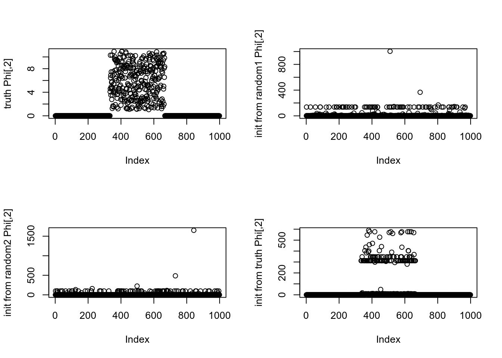

experiment_nb_means
zihao12
2020-03-18
Last updated: 2020-03-19
Checks: 6 1
Knit directory: ebpmf_demo/
This reproducible R Markdown analysis was created with workflowr (version 1.5.0). The Checks tab describes the reproducibility checks that were applied when the results were created. The Past versions tab lists the development history.
Great! Since the R Markdown file has been committed to the Git repository, you know the exact version of the code that produced these results.
Great job! The global environment was empty. Objects defined in the global environment can affect the analysis in your R Markdown file in unknown ways. For reproduciblity it’s best to always run the code in an empty environment.
The command set.seed(20190923) was run prior to running the code in the R Markdown file. Setting a seed ensures that any results that rely on randomness, e.g. subsampling or permutations, are reproducible.
Great job! Recording the operating system, R version, and package versions is critical for reproducibility.
- unnamed-chunk-3
To ensure reproducibility of the results, delete the cache directory experiment_nb_means_cache and re-run the analysis. To have workflowr automatically delete the cache directory prior to building the file, set delete_cache = TRUE when running wflow_build() or wflow_publish().
Great job! Using relative paths to the files within your workflowr project makes it easier to run your code on other machines.
Great! You are using Git for version control. Tracking code development and connecting the code version to the results is critical for reproducibility. The version displayed above was the version of the Git repository at the time these results were generated.
Note that you need to be careful to ensure that all relevant files for the analysis have been committed to Git prior to generating the results (you can use wflow_publish or wflow_git_commit). workflowr only checks the R Markdown file, but you know if there are other scripts or data files that it depends on. Below is the status of the Git repository when the results were generated:
Ignored files:
Ignored: .RData
Ignored: .Rhistory
Ignored: .Rproj.user/
Ignored: analysis/anchor_word_model_swimmer_cache/
Ignored: analysis/compare_GH_cache/
Ignored: analysis/compare_speeds_ebpmf_cache/
Ignored: analysis/ebpm_two_gamma_debug2_cache/
Ignored: analysis/experiment_ebpm_gammamix2_cache/
Ignored: analysis/experiment_ebpm_gammamix3_cache/
Ignored: analysis/experiment_ebpm_gammamix_cache/
Ignored: analysis/investigate_gamma_poisson_cache/
Ignored: analysis/nmf_anchor_word3_cache/
Ignored: analysis/nmf_anchor_word4_cache/
Ignored: analysis/nmf_sparse10_cache/
Ignored: analysis/nmf_sparse11_cache/
Ignored: analysis/nmf_sparse8_cache/
Ignored: analysis/nmf_sparse9_cache/
Ignored: analysis/test_ebpmf_two_gamma_fast_cache/
Untracked files:
Untracked: Rplot.png
Untracked: Untitled.Rmd
Untracked: Untitled.html
Untracked: analysis/.ipynb_checkpoints/
Untracked: analysis/Experiment_ebpmf_simple.Rmd
Untracked: analysis/anchor_word_model1.Rmd
Untracked: analysis/anchor_word_model2.Rmd
Untracked: analysis/anchor_word_model3.Rmd
Untracked: analysis/compare_speeds_ebpmf.Rmd
Untracked: analysis/debug_ebpmf_two_gamma.Rmd
Untracked: analysis/demo_ebpmf_beta_gamma.Rmd
Untracked: analysis/demo_ebpmf_two_gamma2.Rmd
Untracked: analysis/demo_ebpmf_two_gamma_cache_old/
Untracked: analysis/draft.Rmd
Untracked: analysis/ebpm_gamma_mixture_experiment.Rmd
Untracked: analysis/ebpm_gh_gamma.Rmd
Untracked: analysis/ebpm_two_gamma_test.R
Untracked: analysis/ebpm_two_gamma_test.Rmd
Untracked: analysis/ebpmf.Rmd
Untracked: analysis/ebpmf_demo.Rmd
Untracked: analysis/ebpmf_rank1_demo2.Rmd
Untracked: analysis/ebpmf_two_gamma_debug.Rmd
Untracked: analysis/investigate_gamma_poisson.Rmd
Untracked: analysis/investigate_nmf_sparse.Rmd
Untracked: analysis/nmf_anchor_word4.Rmd
Untracked: analysis/nmf_sparse11.Rmd
Untracked: analysis/nmf_symm.Rmd
Untracked: analysis/play_prior.Rmd
Untracked: analysis/play_shrinkage_methods.Rmd
Untracked: analysis/plot_g.Rmd
Untracked: analysis/rebayes_vignette.Rmd
Untracked: analysis/softmax_experiments.ipynb
Untracked: analysis/test_ebpmf_two_gamma_fast.Rmd
Untracked: analysis/try_CVXR.Rmd
Untracked: cache/
Untracked: code/anchor-word-recovery/
Untracked: data/anchor_word_model1.csv
Untracked: data/nmf_anchor_word3_A.csv
Untracked: data/nmf_anchor_word3_W.csv
Untracked: data/nmf_anchor_word3_X.csv
Untracked: data/nmf_anchor_word4_A.csv
Untracked: data/nmf_anchor_word4_W.csv
Untracked: data/nmf_sparse8_fit_ebpmf_gm_mle.Rds
Untracked: data/nmf_sparse8_fit_ebpmf_gm_mlem.Rds
Untracked: data/nmf_sparse_ebpm_tg_slow.Rds
Untracked: data/swimmer.mat
Untracked: figure/
Untracked: script/nmf_sparse_ebpm_old.R
Untracked: verbose_log_1571583163.21966.txt
Untracked: verbose_log_1571583324.71036.txt
Untracked: verbose_log_1571583741.94199.txt
Untracked: verbose_log_1571588102.40356.txt
Unstaged changes:
Modified: .gitignore
Modified: analysis/Compare_ebpmf_nmf.Rmd
Modified: analysis/Compare_ebvaepm_ebpm.Rmd
Modified: analysis/Experiment_ebpmf_rank1.Rmd
Modified: analysis/demo_ebpm_beta_gamma2.Rmd
Modified: analysis/dnbinom.Rmd
Modified: analysis/ebpm_demo.Rmd
Modified: analysis/nmf_anchor_word2.Rmd
Modified: analysis/nmf_anchor_word3.Rmd
Modified: analysis/nmf_sparse.Rmd
Modified: analysis/nmf_sparse2.Rmd
Modified: analysis/nmf_sparse3.Rmd
Modified: analysis/nmf_sparse6.Rmd
Modified: analysis/nmf_sparse7.Rmd
Modified: analysis/nmf_sparse8.Rmd
Modified: analysis/nmf_sparse9.Rmd
Modified: analysis/numerical_lgamma.Rmd
Modified: analysis/softmax_experiments.Rmd
Modified: analysis/test_ebpm_gamma_mixture_single_scale.Rmd
Modified: code/misc.R
Modified: data/nmf_sparse8_fit_ebpmf_gm.Rds
Modified: data/nmf_sparse_ebpm_gamma_mixture2.Rds
Deleted: script/nmf_sparse_ebpm.R
Modified: script/nmf_sparse_ebpm_tg_slow.R
Note that any generated files, e.g. HTML, png, CSS, etc., are not included in this status report because it is ok for generated content to have uncommitted changes.
These are the previous versions of the R Markdown and HTML files. If you’ve configured a remote Git repository (see ?wflow_git_remote), click on the hyperlinks in the table below to view them.
| File | Version | Author | Date | Message |
|---|---|---|---|---|
| Rmd | 77cfecb | zihao12 | 2020-03-19 | nb means write up |
| html | e55a5ce | zihao12 | 2020-03-19 | Build site. |
| Rmd | b78956b | zihao12 | 2020-03-19 | nb means 5 |
| Rmd | 861fb61 | zihao12 | 2020-03-19 | update nb means |
| html | 648e32f | zihao12 | 2020-03-19 | Build site. |
| html | 43c4ad6 | zihao12 | 2020-03-19 | Build site. |
| Rmd | 8386435 | zihao12 | 2020-03-19 | show nb_means 3 |
| html | 8d2e560 | zihao12 | 2020-03-19 | Build site. |
| Rmd | 61be19c | zihao12 | 2020-03-19 | analyse nb_means 2 |
| html | 986523c | zihao12 | 2020-03-19 | Build site. |
| Rmd | fde1c5d | zihao12 | 2020-03-19 | analyse nb_means |
| Rmd | d234d01 | zihao12 | 2020-03-19 | start analysing nb_means |
Model
\[\begin{align} & y_{jk} \sim Pois(s_k \mu_j v_{jk})\\ & v_{jk} \sim Ga(1/\phi_{jk}, 1/\phi_{jk})\\ \end{align}\]The assumption is that \(\phi_{jk}\) is sparse. \
The model and implementation details are in . The code is in
rm(list = ls())
source("script/nb_means.R")
set.seed(123)Below I simulate \(y_{jk}\) from the model above. I run my algorithm 3 times: random initialization twice, and initialization from truth once.
exper_nb_means <- function(K = 3, p = 999, maxiter = 10, seed = 123){
set.seed(seed)
eps = 1e-3
signal = 10
s = replicate(K, 1)
mu = runif(p)
Phi = matrix(eps * runif(p * K), nrow = p, ncol = K)
Phi[1:(p/3),1] = 1 + signal * runif(p/3)
Phi[((p/3)+1):(2*p/3), 2] = 1 + signal * runif(p/3)
Phi[((2*p/3)+1):p,3] = 1 + signal * runif(p/3)
A = 1/Phi
## simulate data from the model
V = matrix(rgamma(n = p*K, shape = A, rate = A), nrow = p)
Theta = (mu %o% s) * V
Y = matrix(rpois(n = p * K, lambda = Theta), nrow = p)
ll_oracle = loglikelihood.nb_means(Y, s, mu, A)
#print(sprintf("ll_oracle : %f", ll_oracle))
mu0 = runif(p)
A0 = matrix(runif(p * K), nrow = p, ncol = K)
runtime <- system.time(
fit_init_random1 <- mle.nb_means.workhorse(Y, s, mu0, A0, maxiter = maxiter, verbose = FALSE,
control = list(gradient = TRUE, hessian = FALSE))
)
fit_init_random1[["runtime"]] = runtime[[3]]
mu0 = runif(p)
A0 = matrix(runif(p * K), nrow = p, ncol = K)
runtime <- system.time(
fit_init_random2 <- mle.nb_means.workhorse(Y, s, mu0, A0, maxiter = maxiter, verbose = FALSE,
control = list(gradient = TRUE, hessian = FALSE))
)
fit_init_random2[["runtime"]] = runtime[[3]]
runtime <- system.time(
fit_init_truth <- mle.nb_means.workhorse(Y, s, mu, A, maxiter = maxiter, verbose = FALSE,
control = list(gradient = TRUE, hessian = FALSE))
)
fit_init_truth[["runtime"]] = runtime[[3]]
return(list(Y = Y, mu = mu, Phi = Phi, ll_oracle = ll_oracle,
fit_init_random1 = fit_init_random1, fit_init_random2 = fit_init_random2, fit_init_truth = fit_init_truth))
}exper <- exper_nb_means(K = 3, p = 999, maxiter = 100)comparee loglikelihood
plot(exper$fit_init_random2$progress, col = "red", xlab = "niter", ylab = "loglikelihood", type = "l")
lines(exper$fit_init_random1$progress, col = "green")
lines(exper$fit_init_truth$progress, col = "blue")
abline(h = exper$ll_oracle, col = "black")
compare \(\Phi\)
K = 3
for(k in 1:K){
par(mfrow = c(2,2))
plot(exper$Phi[,k], ylab = sprintf("truth Phi[,%d]", k))
plot(1/exper$fit_init_random1$A[,k], ylab = sprintf("init from random1 Phi[,%d]", k))
plot(1/exper$fit_init_random2$A[,k], ylab = sprintf("init from random2 Phi[,%d]", k))
plot(1/exper$fit_init_truth$A[,k], ylab = sprintf("init from truth Phi[,%d]", k))
}

Conclusion
- The result is very dependent on initiailization.
- The algorithm does not recover the true structure in \(\Phi\) well.
sessionInfo()R version 3.5.1 (2018-07-02)
Platform: x86_64-apple-darwin15.6.0 (64-bit)
Running under: macOS 10.14
Matrix products: default
BLAS: /Library/Frameworks/R.framework/Versions/3.5/Resources/lib/libRblas.0.dylib
LAPACK: /Library/Frameworks/R.framework/Versions/3.5/Resources/lib/libRlapack.dylib
locale:
[1] en_US.UTF-8/en_US.UTF-8/en_US.UTF-8/C/en_US.UTF-8/en_US.UTF-8
attached base packages:
[1] stats graphics grDevices utils datasets methods base
loaded via a namespace (and not attached):
[1] workflowr_1.5.0 Rcpp_1.0.2 rprojroot_1.3-2 digest_0.6.22
[5] later_0.8.0 R6_2.4.0 backports_1.1.5 git2r_0.26.1
[9] magrittr_1.5 evaluate_0.14 stringi_1.4.3 fs_1.3.1
[13] promises_1.0.1 whisker_0.3-2 rmarkdown_2.1 tools_3.5.1
[17] stringr_1.4.0 glue_1.3.1 httpuv_1.5.1 xfun_0.8
[21] yaml_2.2.0 compiler_3.5.1 htmltools_0.3.6 knitr_1.28